Linguagem R na Ciência de Dados
Aula 06 - Gráficos em R
Filosofia de publicação (Selo DC)

Introdução
Objetivos da aula
Ao final desta aula você deverá ser capaz de:
- Construir gráficos usando Base R;
- Personalizar gráficos;
- Utilizar o pacote
ggplot2; - Construir gráficos interativos;
- Conhecer outros sistemas gráficos do R.
Sistemas Gráficos no R
Principais sistemas
| Sistema | Característica |
|---|---|
| Base R | Simples e rápido |
| ggplot2 | Gramática dos gráficos |
| plotly | Interatividade |
| lattice | Gráficos condicionais |
| highcharter | Visual moderno |
| leaflet | Mapas interativos |
Base R
O sistema gráfico nativo
O Base R já acompanha a instalação do R.
Principais funções:
plot()hist()boxplot()barplot()pie()
Gráfico de Dispersão
Exemplo básico
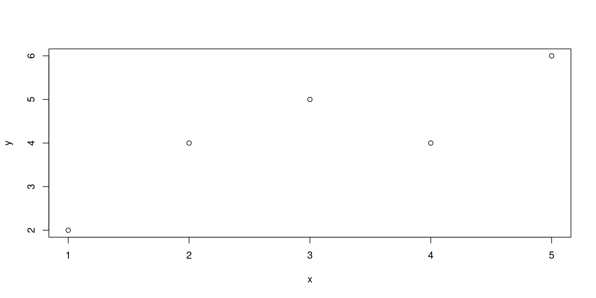
Personalizando gráficos
Ajustando elementos gráficos
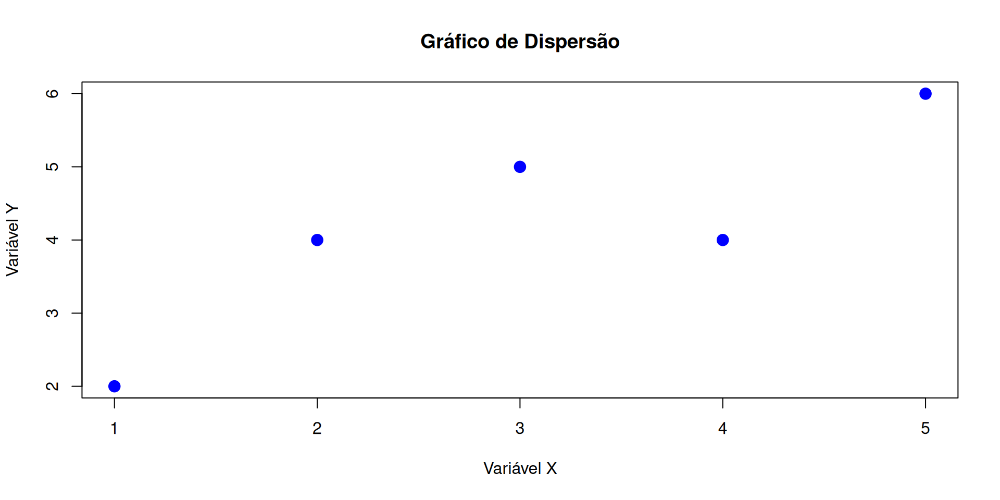
Principais argumentos
Argumentos gráficos importantes
| Argumento | Função |
|---|---|
main |
Título |
xlab |
Nome do eixo X |
ylab |
Nome do eixo Y |
col |
Cor |
pch |
Símbolo |
cex |
Tamanho |
lwd |
Espessura |
lty |
Tipo de linha |
Demais argumentos
Saber mais parâmetros gráficos:
?`graphical parameters`
Gráfico de Linhas
Série temporal simples
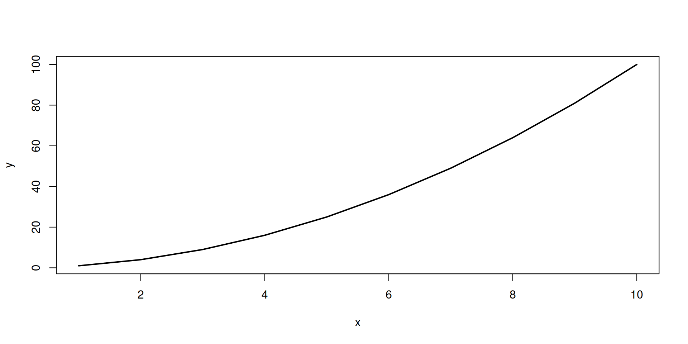
Histogramas
Distribuição de frequências
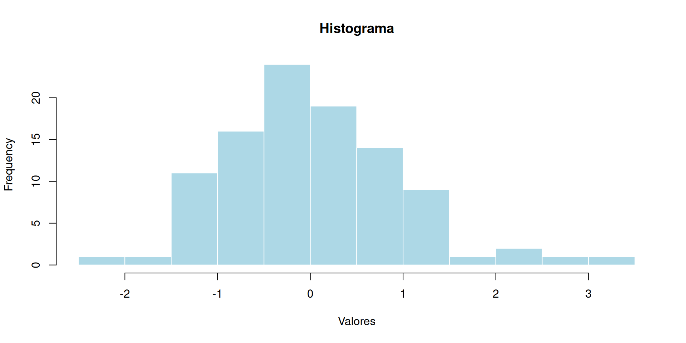
Boxplot
Medidas resumo
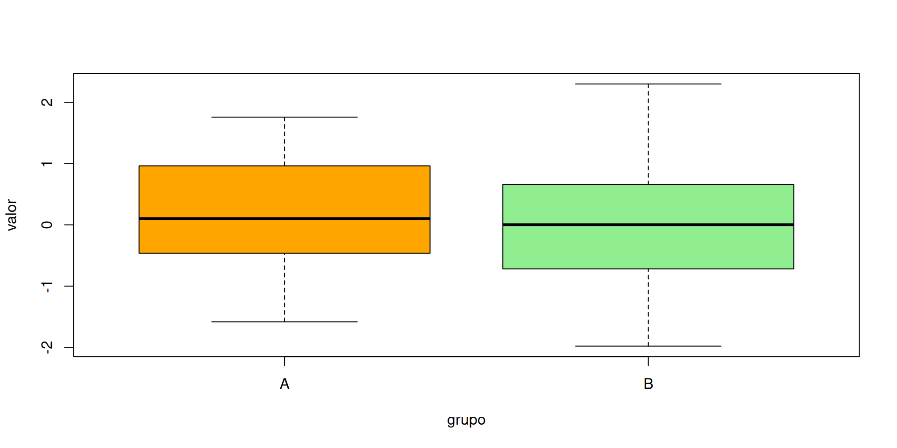
Barplot
Gráfico de barras
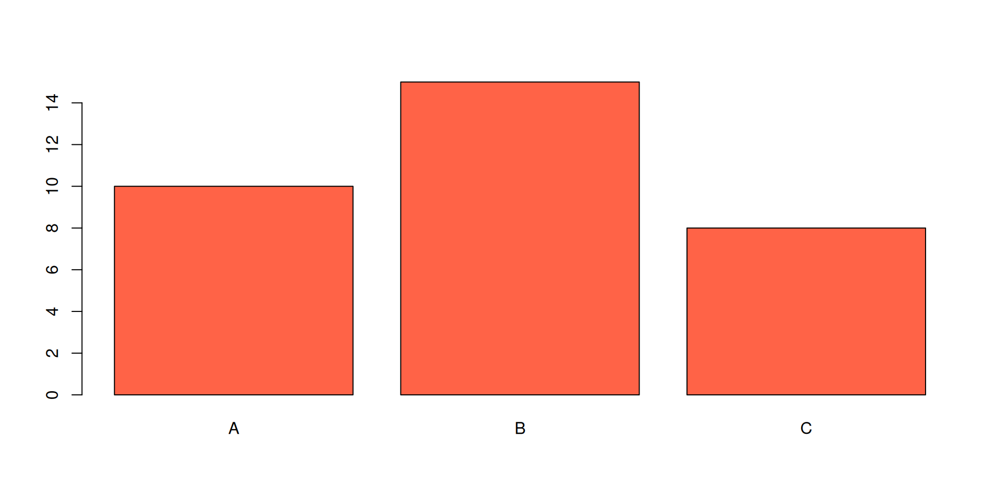
Limitações do Base R
Algumas dificuldades
- Sintaxe menos moderna;
- Personalização extensa pode ficar complexa;
- Menor integração com pipelines;
- Interatividade limitada.
ggplot2
Gramática dos gráficos
O ggplot2 é um dos pacotes mais importantes do R.
Instalação:
Carregamento:
Estrutura do ggplot2
Estrutura básica
Componentes:
- Dados;
- Estética (
aes()); - Geometrias (
geom_*()); - Temas.
Dispersão com ggplot2
geom_point()
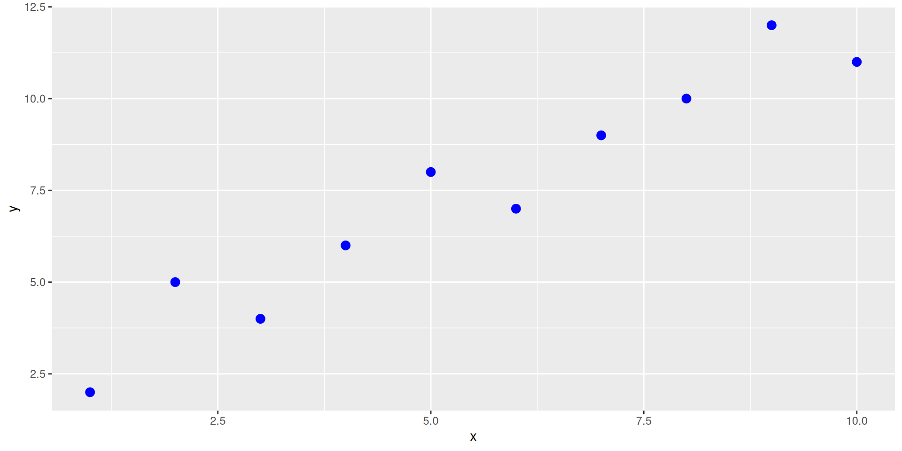
Adicionando linhas
geom_line()
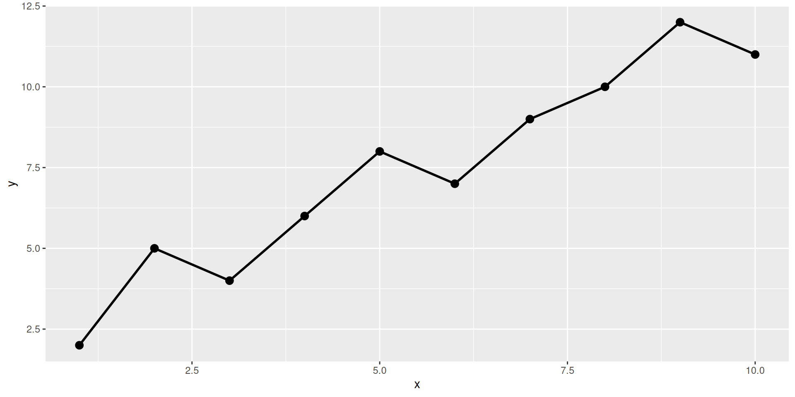
Histogramas no ggplot2
geom_histogram()
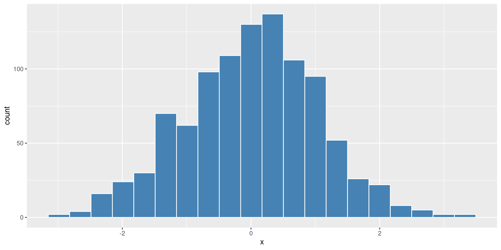
Boxplot com ggplot2
geom_boxplot()
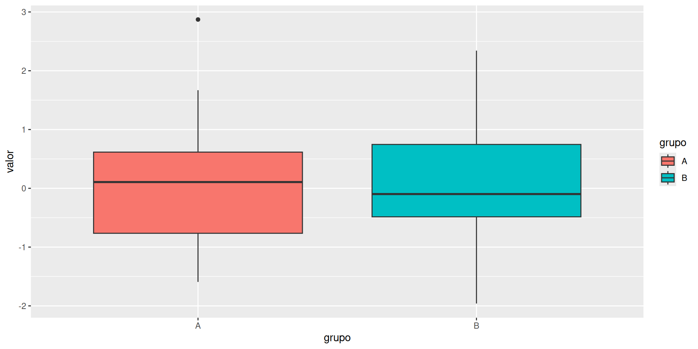
Temas
Melhorando o visual
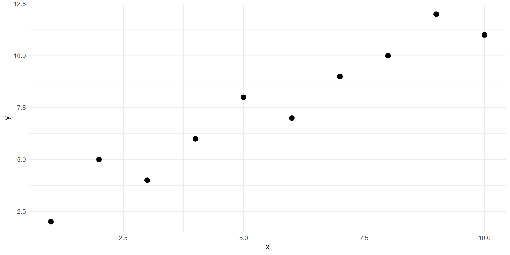
Outros temas
Temas disponíveis
| Tema | Função |
|---|---|
| Minimalista | theme_minimal() |
| Clássico | theme_classic() |
| Escuro | theme_dark() |
| Preto e branco | theme_bw() |
Facetas
Dividindo gráficos
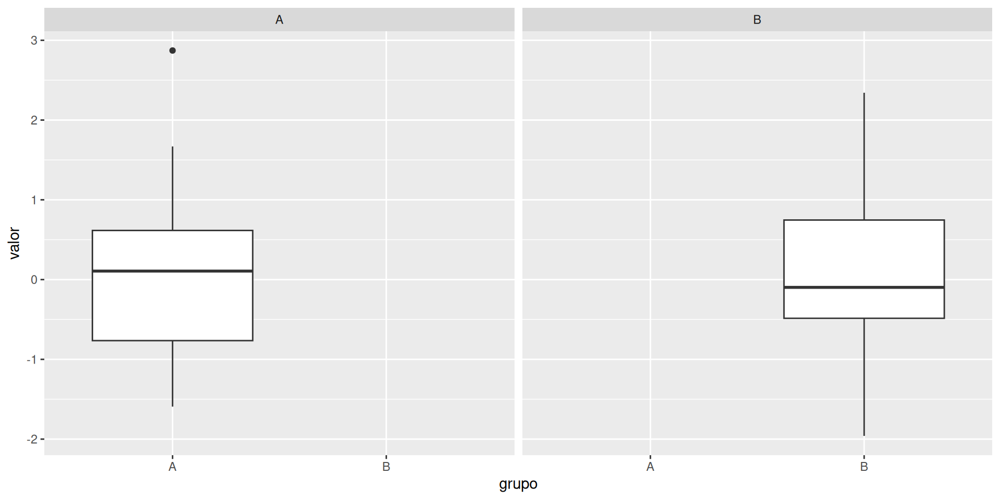
plotly
Gráficos interativos
Instalação:
Exemplo plotly
Interatividade
ggplot2 + plotly
Tornando gráficos interativos
Outros Pacotes
Ecossistema gráfico
lattice
highcharter
leaflet
Exportando gráficos
Base R
ggplot2
Comparação
Sistemas gráficos
| Sistema | Vantagem | Desvantagem |
|---|---|---|
| Base R | Simples | Menos elegante |
| ggplot2 | Flexível | Curva de aprendizado |
| plotly | Interativo | Mais pesado |
| lattice | Painéis | Menos popular |
Aplicações
Onde os gráficos são utilizados?
- Estatística;
- Engenharia;
- Ciência de dados;
- Machine learning;
- Controle estatístico;
- Dashboards;
- Relatórios técnicos.
Exercícios
Prática
- Construir um histograma;
- Construir um boxplot;
- Criar um gráfico no ggplot2;
- Tornar o gráfico interativo;
- Alterar temas gráficos.
Conclusão
Resumo
Nesta aula vimos:
- Base R;
- ggplot2;
- plotly;
- Sistemas gráficos modernos;
- Exportação de gráficos.